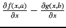
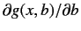

The pseudo code for the subtraction operation is functionally same as that for the addition operator.
Expr(L,R) {return L-R}; /* Compute the value for the
ComputeResult(L,R,Expr); subtraction operator */
/* Compute the derivative w.r.t. common variables */
Expr(L,R,dxL,dxR) {return (dxL - dxR)};
dCommonVar(Expr,L,R);
This is equivalent of computing

. In addition to the
above operations, the partial derivatives of the RHS operand with
respect to all the non-common variables needs to be negated (here

).
IDList = union(L.IDList, R.IDList);
for ID in IDList /* unique IDs in L and R */
if (ID in R.IDList)
{
dxR = pop(DS[ID]);
push(-dxR, DS[ID]);
}